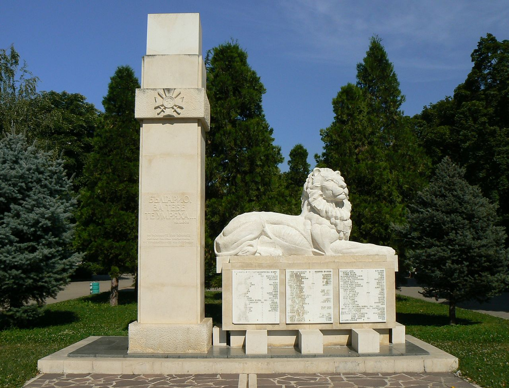
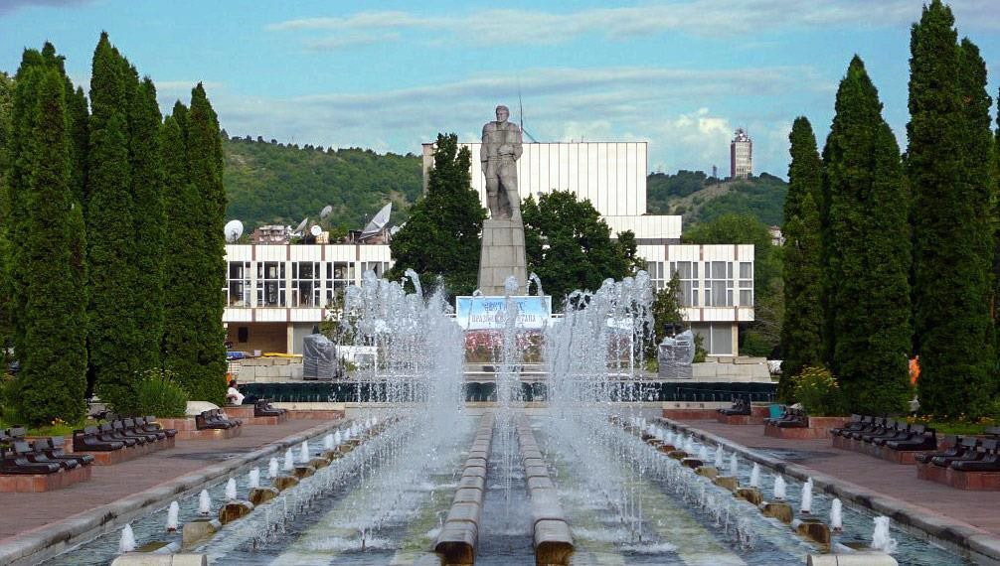

Археологическата експозиция на епиграфски паметници от римската епоха е разположена в района на античния град Монтана, върху площ от 700 m², в парковата среда на Попската градина. В непосредствена близост са музейният обект Михайлова къща и православният храм „Св. св. Кирил и Методий“. Обемно-пространствената композиция включва 56 бр. паметници открити в Монтана. Надписите върху мрамора са единствените засега писмени извори за този провинциален римски град и съдържат ценни сведения за историята и културата на Монтана през II-III в.
Историческият музей в гр. Монтана е създаден през 1953 г. За повече от шест десетилетия се извършва значителна по обем събирателска, научноизследователска и популяризаторска дейност. Организират се не само системни археологически разкопки, но и проучване на материалната и духовната култура, които придават уникалния облик на региона. Културни ценности, притежание на музея, са показани в Експозиционната зала, Михайловата къща, археологическата експозиция Лапидариум и Античната крепост. През 2003 г. музеят е удостоен с Почетния знак на Община Монтана. С Решение № 396/2006 г. на Общински съвет - Монтана придобива регионален статут, а с Решение № 573/2011 г. - Художествена галерия "Кирил Петров" е включена в неговата структура. Към днешна дата РИМ - Монтана притежава над 50 000 движими културни ценности. Сред тях са епиграфските паметници от римската епоха в Лапидариума, копие на откритото в Якимово съкровище, средновековно съкровище от XIV век, златни накити от римската епоха, колекция от стари икони, колекция от стари чипровски килими, оръжейна колекция и др. Музеят е разположен в централната част на град Монтана.
Паметника на загиналите във войните за национално обединение е като своеобразна граница между площада Жеравица и Градската градина с прилежащите им фонтани. На 3-ти март по повод освобождението на България стотици граждани се стичат да отдадат своята почит на загиналите. В знак на признателност се полагат венци и цветя пред паметника.
Фонтаните на град Монтана са архитектурно оформен мраморен шадраван с множество водоскоци, които в топлите месеци на годината вечер са осветяват в атрактивни цветове. Изградени сана централния площад "Жеравица". В единия край на големия правоъгълен воден басейн се извисява монументален паметник на "Септемврийци". Площадът на Фонтаните е място за разходка, за почивка, за срещи и същевременно за отбелязване на големите национални и местни празници и за организиране на тържества. Около Фонтаните са устроени места за почивка и се поддържа постоянна зелена паркова зона. Тъй като мястото около тях е с денивелация, монтирани са и рампи за придвижване на хора с увреждания. Цялата околна площ и съседните райони е пешеходна зона. Около площада и Фонтаните се намират редица централни административни и културни средища на града - Общинската администрация, Историческият музей, Драматичният театър "Драгомир Асенов", Библиотеката "Гео Милев" и др. . 